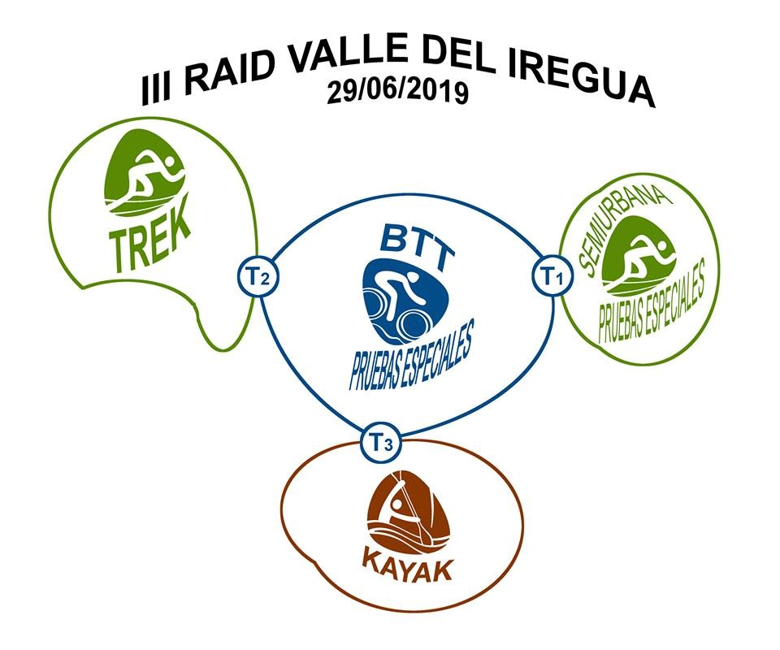

Sábado de 29 de junio de 2019
08:00 a 09:00 Recepción de participantes. Por determinar. (La Rioja)
09:15 Recogida de las bolsas para transiciones
09:30 Brieffing modalidad aventura
10:00 Inicio del III RAID VALLE DEL IREGUA. MODALIDAD AVENTURA
17:00 Cierre de meta. MODALIDAD aventura
17:30 Duchas y comida
18:00 Entrega de premios del III RAID VALLE DEL IREGUA
